Смотрите на регистр при написании ответа, тест чувствителен к нему!
~Опасности - это процессы, явления, предметы, оказывающие негативное воздействие на жизнь и здоровье человека
~Аксиома о потенциальной опасности деятельности гласит - Невозможно разработать абсолютно безопасную технику
~Безопасность - это состояние деятельности, при котором с определенной вероятностью исключено появление опасностей
~НОКОСФЕРА - это пространство, в котором постоянно или периодически действуют опасности
~Идентификация опасностей - это Обнаружение и установление временных, пространственных и иных характеристик опасностей
~ИНДЕНТИФИКАЦИЯ опасностей - это детальный анализ опасностей, формируемых в изучаемой деятельности
~Пространство, в котором осуществляется деятельность человека, называется - Гомосфера
~Пространство, в котором постоянно или периодически действуют опасности, называется - Ноксосфера
~Любая деятельность ПОТЕНЦИАЛЬНО опасна
~Индивидуальный риск - это Отношение числа неблагоприятных проявлений опасности к их возможному числу за определенный период
~Зависимость между частотой событий и числом пораженных при этом людей характеризует - Социальный риск
~Ожидаемое количество пострадавших в результате аварий на объекте за определенный период времени характеризует КОЛЛЕКТИВНЫЙ риск
~В настоящее время по международным оценкам приемлемым и пренебрежимо малым соответственно считается значение риска: 10^(-6) и 10^(-8).
~Для экологической системы приемлемым считается риск, при котором может погибнуть не более 5% видов биогеоценоза
~Априорным называется - Анализ, в ходе которого выбираются такие нежелательные события, которые являются потенциально возможными для данной системы, и составляется набор гипотетических ситуаций, приводящих к их появлению
~Апостериорным называется - Анализ, который выполняется после того, как нежелательное событие уже произошло, в целях разработки рекомендаций на будущее~Ожидаемое количество пострадавших в результате аварий на объекте за определенный период времени - это Социальный риск
~Значение индивидуального риска травмирования на производстве, в котором занято 5000 чел, а число травмированных за отчетный период 10 чел, составляет 2*10^(-3)
~Индивидуальный риск травматизма на производстве, в котором участвуют 100 человек, а коллективный риск составляет 3*10^(-2), равен 3*10^(-4)
~Коллективный риск травматизма на производстве, в котором участвуют 1000 человек, а индивидуальный риск составляет 0,2*10-4, равен 0,02
~По международной договоренности приемлемым считается риск - 10^(-6)
~Пренебрежимо малым считается риск - 10^(-8)
~Для экологической системы приемлемым считается риск, при котором может погибнуть не более 1% видов биогеоценоза
~Изучение риска, основанное на вероятностном анализе безопасности, характеризует ИНЖЕНЕРНЫЙ подход
~Изучение риска, основанное на построении моделей воздействия вредных факторов на человека и окружающую среду, характеризует МОДЕЛЬНЫЙ подход
~Изучение риска на основе обработки результатов опроса экспертов характеризует ЭКСПЕРТНЫЙ подход
~Изучение отношения населения к разным видам риска характеризует СОЦИОЛОГИЧЕСКИЙ подход к изучению риска
~Свойство системы выполнять заданные функции в течение определенного времени при заданных условиях работы характеризует надежность системы
~В теории надежности нарушение работоспособного состояния технического устройства из-за прекращения функционирования или из-за резкого изменения его параметров - это отказ
~Свойство системы выполнять заданные функции в течение определенного времени при заданных условиях работы называется надежностью
~Относительное динамическое постоянство внутренней среды и некоторых физиологических функций организма человека, поддерживаемое механизмами саморегуляции в условиях колебаний внутренних и внешних раздражителей - это гомеостаз
~Процесс приспособления организма к меняющимся условиям среды - это АДАПТАЦИЯ {??}
~Зависимость между интенсивностью ощущений и силой раздражителя может быть выражена формулой (J - интенсивность ощущения, E - сила раздражителя, а, k - константы): J = a * lg(E) + k
~Утверждение «величина ощущения изменяется медленнее, чем сила раздражителя» справедливо для всех рецепторов, кроме болевых
~Время от начала действия раздражителя до проявления ощущения называется
латентный период
~Закон Вебера-Фехнера характеризует зависимость между величиной ощущения и силой раздражителя
~Согласно закону Вебера-Фехнера величина ощущения изменяется Слабее, чем сила раздражителя
~Согласно закону Вебера-Фехнера зависимость между величиной ощущения и силой раздражителя Логарифмическая
~Латентный период - это Время от начала действия раздражителя до проявления ощущения
~Закону Вебера - Фехнера не подчиняется Болевая чувствительность
~Закон Вебера-Фехнера не распространяется на БОЛЕВУЮ чувствительность
~Совокупность взаимосвязанных компонентов, взаимодействующих между собой таким образом, чтобы выполнять заданные функции при определенных условиях - это система
~Терморегуляция - это поддержание постоянства температуры тела человека при изменяющихся внешних условиях
~Динамическая физическая работа, при которой в процессе трудовой деятельности задействовано от 2/3 до 1/3 мышц человека (мышцы только корпуса, ног, рук), называется региональной
~Согласование органов управления с силовыми возможностями человека обеспечивает ЭНЕРГЕТИЧЕСКУЮ совместимость
~Учет размеров тела человека, возможностей обзора, положения, позы в процессе работы характеризует антропометрическую совместимость
~Соответствие информационной модели психофизиологическим возможностям человека обеспечивает информационную совместимость
~В понятие «параметры микроклимата» не входит освещенность
~Общей называется динамическая физическая работа, при которой в процессе трудовой деятельности задействовано более 2/3 мышц человека
~Динамическая физическая работа, при которой в процессе трудовой деятельности задействовано более 2/3 мышц человека, называется общей
~Локальной называется динамическая физическая работа, при которой в процессе трудовой деятельности задействовано менее 1/3 мышц человека
~Динамическая физическая работа, при которой в процессе трудовой деятельности задействовано менее 1/3 мышц человека, называется локальной
~Элементами структуры психической деятельности человека являются психические свойства, психические ПРОЦЕССЫ и психические состояния
~По мере увеличения эмоционального напряжения работоспособность сначала увеличивается, затем начинает уменьшаться
~Период максимальной эффективности труда, в течение которой организм человека нормально компенсирует рабочую нагрузку, называется фазой компенсации
~Фаза врабатывания, или стадия нарастающей работоспособности, т.е. период, в течение которого совершается переход от состояния покоя к рабочему, называется фазой гиперкомпенсации
~Период, когда нарастает утомление, которое компенсируется за счет нагрузки на внутренние органы, является фазой субкомпенсации
~Появление ошибок в работе, функциональные нарушения и утомление характеризуют наступление фазы декомпенсации
~Закон Иеркса-Додсона характеризует зависимость между активацией нервной системы и продуктивностью действий
~Недооценка опасности, склонность к риску связана с нарушением мотивационной части действий человека
~Незнание норм и способов обеспечения безопасности является нарушением ориентировочной части действий человека
~Несоответствие психофизических возможностей человека требованиям данной работы является нарушением исполнительской части действий человека
~Нарушение мотивационной части действий человека устраняется путем Формирования культуры безопасности
~Нарушение ориентировочной части действий человека устраняется путем Обучения, выработки навыков и приемов безопасных действий
~Экология и "охрана окружающей среды" Экология является научной базой охраны окружающей среды
~Экология - это Наука о взаимодействии живых организмов между собой и средой обитания
~Номер системы стандартов "Охрана природы" по классификатору 17
~Интервал значений экологических факторов, в пределах которого может существовать организм, называется пределами Толерантности
~Из экологических факторов среды к абиотическим относятся Климатические
~Из экологических факторов среды к биотическим относятся Фитогенные
~Наибольшее процентное содержание в атмосфере составляет Азот
~Процентное содержание кислорода в атмосфере составляет примерно 21% по объему
~Наибольшее процентное содержание в атмосфере составляет - Азот
~Энергия ветра относится к ресурсам Неисчерпаемым
~Плодородие почв относится к ресурсам Возобновляемым
~Растительный мир относится к ресурсам Возобновляемым
~Полезные ископаемые относятся к ресурсам Исчерпаемым
~Энергия рек относится к ресурсам Исчерпаемым
~По происхождению загрязнения классифицируются на природные и антропогенные
~По распространению загрязнения классифицируются на локальные и глобальные
~Причиной "парникового эффекта" является Задержка инфракрасного излучения поверхности земли СО{2} и другими трехатомными газами
~Образование "парникового эффекта" связано с выбросами углекислого газа
~Вредное воздействие монооксида углерода на организм человека проявляется в препятствует переносу кислорода кровью
~"Озоновый экран" задерживает жесткое ультрафиолетовое излучение
~Термином "смог" характеризуют видимое загрязнение воздуха любого характера
~Для веществ, которые оказывают немедленное, но временное раздражающее действие, устанавливается максимальная разовая ПДК
~Для веществ, накопление которых в организме вредно (т.е. вещества общетоксического действия), устанавливают среднесуточные предельно допустимые концентрации.
~Временно допустимая концентрация, устанавливаемая для новых веществ с еще не известным токсикологическим действием, называется ОБУВ (аббревиатура)
~Стандартами качества атмосферного воздуха населенных мест являются ПДК{сс} и ПДК{мр}
~ПДВ является стандартом воздействия на среду
~ОБУВ является стандартом качества среды
~Оценка состояния атмосферного воздуха с учетом фоновой концентрации (с{ф}) осуществляется в соответствии с выражением, где с - фактическая концентрация загрязнителя в атмосферном воздухе, ПДК{ав} - предельно допустимая концентрация данного загрязнителя - с ≤ ПДК{ав} - с{ф}
~Соотношение между ПДК в рабочей зоне (ПДК{рз}) и ПДК в атмосферном воздухе населенных мест (ПДК{ав}) - ПДК{рз} >ПДК{ав}
~Для территории промплощадок в местах воздухозаборов концентрации вредных веществ не должны превышать 30% ПДК{р.з} (рабочей зоны)
~Предельно допустимая концентрация вредных веществ в воздухе для территории промплощадок в местах воздухозаборов (ПДКПП) где ПДК{р.з} - предельно допустимая концентрация вредных веществ в воздухе рабочей зоны) ПДК{пп} = 0,3ПДК{р.з}
~ОБУВ - это Временно допустимая концентрация, устанавливаемая для новых веществ с еще не известным токсикологическим действием
~ОБУВ - это ориентировочный безопасный уровень воздействия
~ОБУВ утверждаются сроком на три года
~Временный норматив выбросов, устанавливаемый предприятию, которое по техническим причинам не может на данный момент соблюдать предписанные ему ПДВ, называется временно согласованный выброс
~Показатель, являющийся стандартом качества атмосферного воздуха - предельно допустимая - концентрация
~Комбинированное действие токсикантов, при котором имеет место усиление эффекта воздействия, называется - синергизм
~Комбинированное действие токсикантов, при котором имеет место ослабление эффекта воздействия, называется - антагонизм
~Синергизм - это комбинированное действие токсикантов, при котором имеет место усиление эффекта воздействия
~Суммацией называется комбинированное действие токсикантов, при котором имеет место суммирование эффектов воздействия
~Комбинированное действие токсикантов, при котором имеет место суммирование эффектов, индуцированных комбинированным действием, - это суммация
~Антагонизм - это комбинированное действие токсикантов, при котором имеет место ослабление эффекта воздействия
~Классы опасности вредных веществ по ГОСТ 12.1.007-79 - Чрезвычайно опасные, высокоопасные, умеренно опасные, малоопасные
~Для веществ относящихся к 1 классу опасности (чрезвычайно опасные) ПДК составляет: < 0,1
~Для веществ относящихся ко 2 классу опасности (высоко-опасные) ПДК составляет: 0,1...1
~Для веществ относящихся к 3 классу опасности (умеренно-опасные) ПДК составляет: 1,0...10
~Для веществ относящихся к 4 классу опасности (мало-опасные) ПДК составляет: > 10
~Значения ПДК вредных веществ для водных источников устанавливаются в зависимости от лимитирующего показателя вредности
~Показатели качества воды, такие как цвет, запах, вкус относятся к органолептическим показателям
~Лимитирующий показатель вредности (ЛПВ), влияющий на санитарное состояние водоема и скорость протекания процессов самоочищения, - называется общесанитарным показателем
~Лимитирующий показатель вредности (ЛПВ), влияющий на организм человека и обитающих в воде животных, - называется токсикологическим показателем
~Номер системы стандартов "Охрана природы" по классификатору 17
~Комплекс процессов уменьшения влажности обширных территорий и вызванное этим сокращение биологической продуктивности экологических систем называется ___ суши - Аридизация
~Разрушение почв под действием ветра, воды, техники и ирригации называется эрозия, эрозией почв {?}
~Эрозия почвы, связанная с засолением почв вследствие нарушения правил полива при орошаемом земледелии, называется ирригационная, ирригационной {?}
~Эрозия почвы, причиной которой является вынос ветром наиболее мелких частей почвы, называется ветровая, ветровой {?}
~Эрозия почвы, причиной которой является смыв почвы талыми, дождевыми и ливневыми водами называется водная, водной {?}
~Эрозия почвы, причиной которой является разрушение почвы под воздействием транспорта, землеройных машин и т.п., называется техническая, технической {?}
~Территория, предназначенная для создания защитного барьера между территорией предприятия и территорией жилой застройки, называется -
санитарно-защитной зоной
~Наибольший вклад в загрязнение атмосферного воздуха вносят Автомобили
~С увеличением класса предприятия размер санитарно - защитной зоны уменьшается
~К инерционным пылеуловителям относятся Скрубберы
~Мокрый способ пылеулавливания используется в скрубберах
~При грубой очистке воздуха задерживается пыль с размером частиц более 50 мкм
~При средней очистке воздуха задерживается пыль с размером частиц менее 50 мкм
~При тонкой очистке воздуха задерживается пыль с размером частиц менее 10 мкм
~Процесс очистки газов, основанный на поглощении одного или нескольких газовых компонентов жидким поглотителем абсорбция, абсорбцией {?}
~Метод очистки воздуха, основанный на химическом взаимодействии газов и паров с жидкими поглотителями, называется хемосорбция, хемосорбцией {?}
~Метод очистки воздуха, основанный на поглощении отдельных компонентов из газовой смеси поверхностью твердых веществ, называется адсорбция, адсорбцией {?}
~Флотация относится к методам механической очистки
~Аэротенк является устройством, предназначенным для механической очистки сточных вод
~Требования охраны труда обязательны для исполнения - юридическими и физическими лицами при осуществлении ими любых видов деятельности
~Соответствие производственных объектов требованиям охраны труда подтверждает - Сертификат безопасности
~Согласно ТК РФ работник имеет право отказаться от выполнения работ В случае возникновения опасности для его жизни и здоровья
~Направление в служебные командировки женщин, имеющих детей в возрасте до 3-х лет - Разрешается с их письменного согласия при отсутствии медицинских противопоказаний
~Расторжение трудового договора по инициативе работодателя с беременными женщинами - Не допускается, за исключением случаев ликвидации организации
~Шифр системы стандартов безопасности труда (ССБТ) в государственной системе стандартизации "12"
~Работодатель обязан обеспечить - Недопущение к работе лиц, не прошедших в установленном порядке обучение и инструктаж по охране труда, стажировку и проверку знаний требований охраны труда
~Приобретение, хранение, стирка, ремонт средств индивидуальной защиты работников осуществляется За счет средств работодателя
~Обеспечение санитарно-бытового и лечебно-профилактического обслуживания работников организаций возлагается На работодателя
~Согласно ТК РФ работник обязан: Соблюдать требования охраны труда, установленные законами и иными нормативными правовыми актами, а также правилами и инструкциями по охране труда
~Служба охраны труда создается в организации с численностью - > 50 работников
~Структура и численность работников службы охраны в организации Определяется работодателем
~Согласно ТК РФ комитеты (комиссии) по охране труда создаются по инициативе работодателя или по инициативе работников либо их представительного органа
~Инструктаж, который проводится при внесений изменений в инструкции, нарушении правил, длительных перерывах в работе - внеплановый
~Согласно ГОСТ 12.0.004-90 инструктаж, который проводится при выполнении работ по наряду-допуску - целевой
~Обучение и проверка знаний по охране труда для руководителей учреждений должны проводиться один раз в 3 года
~Периодичность проведения повторного инструктажа по охране труда для работников 1 раз в полгода
~Первичный инструктаж на рабочем месте проходят - все работники, за исключением лиц, которые не связаны с обслуживанием, испытанием, наладкой и ремонтом оборудования, использованием инструмента, хранением и применением сырья и материалов
~Государственный инспектор труда имеет право (указать неверное) - Налагать дисциплинарные взыскания
~Государственный санитарно-эпидемиологический надзор осуществляет (орган) - Роспотребнадзор
~Государственный надзор за соблюдением трудового законодательства и иных нормативных правовых актов, содержащих нормы трудового права осуществляет Государственная - инспекция труда
~Государственный контроль и надзор в сфере промышленной безопасности осуществляет (орган) - Ростехнадзор
~Административные взыскания налагаются - представителями органов государственного надзора
~Дисциплинарные взыскания налагаются - работодателем
~Привлекать к административно ответственности за нарушение норм и правил охраны труда имеют право - представители органов государственного надзора
~Согласно ТК РФ вредный производственный фактор - производственный фактор, воздействие которого на работника может привести к его - заболеванию
~Согласно ТК РФ опасный производственный фактор - производственный фактор, воздействие которого на работника может привести к его - травме
~Факторы, характеризующие напряженность труда (указать лишний) Повышенная или пониженная температура воздуха
~К факторам трудового процесса НЕ относятся: Повышенные уровни шума и вибрации, создаваемые оборудованием
~К биологическим факторам относятся: Болезнетворные вирусы и бактерии
~К психофизиологическим факторам НЕ относятся: Болезнетворные вирусы и бактерии
~Работа в опасных (экстремальных) условиях труда (4 класс): допускается в случае ликвидации аварий, проведения экстренных работ для предупреждения аварийных ситуаций
~Степени вредности условий труда по факторам производственной среды: 3.1, 3.2, 3.3, 3.4
~1-я степень вредности условий труда (3.1) - характеризуется уровнями вредных факторов, при которых возникают и развиваются обратимые функциональные изменения и риск развития заболевания
~2-я степень вредности условий труда (3.2) - характеризуется уровнями вредных факторов, при которых возникают и развиваются стойкие функциональные нарушения, рост заболеваемости с временной потерей трудоспособности, появление начальных признаков профессиональных заболеваний
~3-я степень вредности условий труда (3.3) - характеризуется уровнями вредных факторов, при которых возникают и развиваются профессиональные заболевания в легких формах в период трудовой деятельности
~4-я степень вредности условий труда (3.4) - характеризуется уровнями вредных факторов, при которых возникают и развиваются выраженные формы профессиональных заболеваний, отмечаются высокие уровни заболеваемости с временной утратой трудоспособности
~Стойкие функциональные нарушения, рост заболеваемости с временной потерей трудоспособности, появление начальных признаков профессиональных заболеваний могут возникнуть вследствие работы в условиях класса и степени вредности - 3.2
~Классы (подклассы) условий труда на рабочих местах устанавливаются по результатам проведения - специальной оценки условий труда
~Периодичность проведения специальной оценки условий труда согласно действующему законодательству - 5 лет
~В отношении рабочих мест, на которых вредные и (или) опасные производственные факторы по результатам осуществления идентификации не выявлены, работодателем подается в Государственную инспекцию труда - декларация соответствия условий труда государственным нормативным
~Опасным (экстремальным) условиям труда соответствует класс 4
~Допустимым условиям труда соответствует класс 2
~Вредным условиям труда соответствует класс 3
~Оптимальным условиям труда соответствует класс 1
~Условия труда, при которых уровни воздействия вредных и (или) опасных производственных факторов таковы, что в течение всего рабочего дня (смены) или его части способны создать угрозу жизни работника, а последствия воздействия данных факторов обусловливают высокий риск развития острого профессионального заболевания в период трудовой деятельности, относятся к классу 4
~Срок действия декларации соответствия условий труда государственным нормативным требованиям охраны труда 5 лет
~Расследованию и учету на производстве подлежат несчастные случаи, произошедшие - с работниками при исполнении ими трудовой функции
~Несчастные случаи, произошедшие во время служебных поездок на общественном транспорте, а также при следовании по заданию работодателя к месту выполнения работ и обратно, в том числе пешком к несчастным случаям на производстве - относятся
~Какое требование является обязательным при определении состава комиссии по расследованию несчастного случая на производстве? Комиссия должна состоять из нечетного числа членов
~Срок расследования легких несчастных случаев на производстве составляет 3 календарных дня
~Несчастный случай на производстве считается групповым, если Количество пострадавших 2 и более
~Срок расследования группового несчастного случая. В течение 15 календарных дней
~Перечень представляемых материалов при расследовании несчастного случая определяет Председатель комиссии по расследованию несчастного случая
~Срок давности для расследования несчастных случаев на производстве и профзаболеваний составляет срока давности не существует
~Акт о несчастном случае при страховых случаях составляется В 3 экземплярах
~Максимально допустимая степень вины пострадавшего при определении размера возмещения вреда составляет - 25%
~Комплекс стандартов «Безопасность в чрезвычайных ситуациях» (БЧС) имеет шифр в ГСС - 22
~К региональной относится ЧС, в которой пострадало от 50 до 500 человек
~К локальной относится ЧС, в которой пострадало ≤ 10 человек
~К местной относится ЧС, в которой пострадало от 10 до 50 человек
~К территориальной относится ЧС, в которой пострадало от 50 до 500 человек
~К федеральной относится ЧС, в которой пострадало > 500 человек
~Безопасным для людей и животных, расположенных вне укрытий, считается избыточное давление во фронте ударной волны - менее 10 кПа
~Крайне тяжелые контузии и травмы, которые могут привести к смертельному исходу, соответствуют величине избыточного давления во фронте ударной волны более 100 кПа
~Полные разрушения являются следствием воздействия избыточного давления во фронте ударной волны более 50 кПа
~Величине избыточного давления во фронте ударной волны 10 - 20 кПа соответствуют разрушения слабые
~Величине избыточного давления во фронте ударной волны 20 - 30 кПа соответствуют разрушения средние
~Величине избыточного давления во фронте ударной волны 30 - 50 кПа соответствуют разрушения сильные
~Зона слабых разрушений может возникнуть вследствие воздействия ударной волны с избыточным давлением 10 - 20 кПа
~Зона средних разрушений может возникнуть вследствие воздействия ударной волны с избыточным давление 20 - 30 кПа
~Зона сильных разрушений может возникнуть вследствие воздействия ударной волны с избыточным давлением 30 - 50 кПа
~Легкие поражения наступают при избыточном давлении во фронте ударной волны 20...40 кПа
~Поражения средней тяжести возникают при избыточном давлении во фронте ударной волны 40...60 кПа
~Тяжелые контузии и травмы возникают при избыточном давлении во фронте ударной волны 60...100 кПа
~К опасным факторам пожара не относятся - шум и вибрация
~Степени огнестойкости зданий и сооружений согласно СНиП 21-01-97: I, II, III, IV, V
~Предел огнестойкости строительной конструкции - это: Время (в минутах) наступления одного или последовательно нескольких, нормируемых для данной конструкции, признаков предельных состояний
~Пожары, связанные с горением газообразных веществ, относятся к классу C
~Пожары, связанные с горением твердых горючих веществ, относятся к класс A
~Пожары, связанные с горением нефтепродуктов, относятся к классу В
~Пожары, связанные с горением щелочных металлов, относятся к классу D
~Пожары в электроустановках, находящихся под напряжением, относятся к классу D
~К классу А относятся пожары, связанные с горением твердых горючих веществ
~К классу В относятся пожары, связанные с горением нефтепродуктов
~К классу С относятся пожары, связанные с горением газообразных веществ
~К классу D относятся пожары, связанные с горением щелочных металлов
~К классу (Е) относятся пожары, связанные с горением электроустановок, находящихся под напряжением
~Помещениям категории взрывопожарной опасности «Б» может соответствовать класс взрыво (пожароопасной) зоны 1, 2, 21 и 22
~Помещения, в которых используются горючие газы, легковоспламеняющиеся жидкости с температурой вспышки не более 28 С, могут иметь категорию взрывопожарной (пожарной) опасности А
~Помещения, в которых используются горючие пыли и волокна, легковоспламеняющиеся жидкости с температурой вспышки более 28 С, могут иметь категорию взрывопожарной (пожарной) опасности Б
~Помещения, в которых используются негорючие вещества и материалы в горячем, раскаленном или расплавленном состоянии, процесс обработки которых сопровождается выделением лучистого тепла, искр и пламени, могут иметь категорию взрывопожарной (пожарной) опасности Г
~Помещения, в которых используются горючие газы, жидкости и твердые вещества, которые сжигаются в качестве топлива, могут иметь категорию взрывопожарной (пожарной) опасности Г
~Помещения, в которых используются негорючие вещества и материалы в холодном состоянии, могут иметь категорию взрывопожарной (пожарной) опасности Д
~Категории помещения А по СП 12.13130-09 может соответствовать класс взрыво (пожаро)опасной зоны 1 и 2
~Категории помещения А по СП 12.13130-09 может соответствовать класс взрыво (пожаро)опасной зоны 21, 1, 2, 22
~К категории взрывопожарной опасности А по СП 12.13130-09 относятся помещения, в которых используются Горючие газы, легковоспламеняющиеся жидкости с температурой вспышки до 28 С
~К категории взрывопожарной опасности Б согласно СП 12.13130-09 относятся помещения, в которых используются Горючие пыли и волокна, легковоспламеняющиеся жидкости с температурой вспышки более 28 С
~К категории взрывопожарной опасности В1 - В4 согласно СП 12.13130-09 относятся помещения, в которых используются Горючие жидкости, твердые горючие вещества и материалы
~К категории взрывопожарной опасности Г согласно СП 12.13130-09 относятся помещения, в которых используются Горючие газы, жидкости и твердые вещества, которые сжигаются в качестве топлива
~К категории взрывопожарной опасности Г согласно СП 12.13130-09 относятся помещения, в которых используются Негорючие вещества и материалы в горячем, раскаленном или расплавленном состоянии, процесс обработки которых сопровождается выделением лучистого тепла, искр и пламени
~Зоны, расположенные в помещениях, в которых обращаются горючие газы или пары ЛВЖ, способные образовать с воздухом взрывоопасные смеси при нормальных режимах работы, согласно ПУЭ относятся к классу 1
~Зоны, расположенные в помещениях, в которых обращаются горючие газы или пары ЛВЖ, способные образовать с воздухом взрывоопасные смеси только в результате аварий, согласно ПУЭ относятся к классу 2
~Зоны, расположенные в помещениях, в которых обращаются горючие пыли, способные образовать с воздухом взрывоопасные смеси при нормальных режимах работы, согласно ПУЭ относятся к классу 21
~Зоны, расположенные в помещениях, в которых обращаются горючие пыли, способные образовать с воздухом взрывоопасные смеси только в результате аварий, согласно ПУЭ относятся к классу 22
~Пространство, в котором газопаровоздушная взрывоопасная среда присутствует постоянно или в течение хотя бы одного часа относятся к классу 0
~Зоны, расположенные в помещениях, в которых обращаются твердые горючие вещества, относятся к классу П IIа
~Зоны, расположенные в помещениях, в которых обращаются горючие жидкости с температурой вспышки выше 61 С согласно ПУЭ относятся к классу П I
~Зоны, расположенные в помещениях, а которых выделяются горючие пыли или волокна с нижним концентрационным пределом воспламенения более 65 г/м3 к объему воздуха, согласно ПУЭ относятся к классу П II
~К классу 1 относятся: Зоны, расположенные в помещениях, в которых выделяются горючие газы или пары ЛВЖ в таком количестве и с такими свойствами, что они могут образовать с воздухом взрывоопасные смеси при нормальных режимах работы
~К классу 2 относятся: Зоны, расположенные в помещениях, в которых при нормальной эксплуатации взрывоопасные смеси горючих газов или паров ЛВЖ с воздухом не образуются, а возможны только в результате аварий или неисправностей
~К классу 21 согласно ПУЭ относятся: Зоны, расположенные в помещениях, в которых выделяются переходящие во взвешенное состояние горючие пыли, способные образовать с воздухом взрывоопасные смеси при нормальных режимах работы
~К классу 22 относятся: Зоны, расположенные в помещениях, в которых выделяются переходящие во взвешенное состояние горючие пыли, способные образовать с воздухом взрывоопасные смеси только в результате аварий или неисправностей
~К классу 20 относятся: Зоны, в которых взрывоопасные смеси горючей пыли с воздухом имеют нижний концентрационный предел менее 65 г/м3 и присутствуют постоянно
~К классу П I относятся: Зоны, расположенные в помещениях, в которых обращаются горючие жидкости с температурой вспышки выше 61 С
~К классу П II согласно ПУЭ относятся: Зоны, расположенные в помещениях, а которых выделяются горючие пыли или волокна с нижним концентрационным пределом воспламенения более 65 г/м3 к объему воздуха
~К классу П IIа относятся: Зоны, расположенные в помещениях, в которых обращаются твердые горючие вещества
~К классу 0 относятся: Пространство, в котором газопаровоздушная взрывоопасная среда присутствует постоянно или в течение хотя бы одного часа
~Опасности - это процессы, явления, предметы, оказывающие негативное воздействие на жизнь и здоровье человека
~Соотношение понятий "экология"" и "охрана окружающей среды" - экология является научной базой охраны окружающей среды
~Основное направление государственной политики в области охраны труда - обеспечение приоритета сохранения жизни и здоровья работников
~Служба охраны труда создается в организации с численностью более - 50
~Аттестация рабочих мест по условиям труда НЕ включает - оценку проведения медицинских осмотров и профилактических мероприятий
~Гигиеническая оценка воздуха при одновременном присутствии веществ, обладающих эффектом суммации, осуществляется по формуле
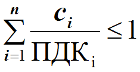
~Гигиеническая оценка воздуха при одновременном присутствии веществ, обладающих эффектом потенцирования, осуществляется по формуле
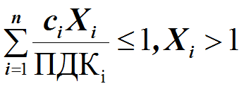
~Гигиеническая оценка воздуха при одновременном присутствии веществ, обладающих эффектом антагонизма, осуществляется по формуле
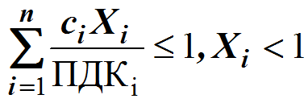
~При наличии нескольких веществ, относящихся к одной группе лимитирующего показателя вредности, содержание загрязняющего вещества должно соответствовать условию
~Природные ресурсы:
Исчерпаемые
Возобновляемые - биоресурсы
Невозобновляемые - ресурсы недр
Неисчерпаемые
Космические - энрг. солнца, энрг. приливов и отливов
Водные
Климатические
~Последовательность предварительного анализа опасностей:
1. Выявление источников опасностей
2. Определение частей системы, которые могут вызвать опасности
3. Введение ограничений на анализ
~Последовательность функциональных состояний (фаз работоспособности) оператора
1. фаза мобилизации
2. фаза первичной реакции
3. фаза гиперкомпенсации
4. фаза компенсации
5. фаза субкомпенсации
6. фаза декомпенсации
7. фаза срыва
~Среди перечисленных факторов указать устойчиво повышающие индивидуальную подверженность опасности
1. особенности темперамента
4. функциональные изменения в организме
5. профессиональная непригодность
7. дефекты органов чувств
~Расположить в порядке убывания их вклада способы теплообмена между организмом человека и окружающей средой
1. тепловое излучение
2. конвекция
3. испарение пота
4. теплопроводность
~Верно, что
1. участки кожи, богатые тактильными рецепторами, имеет мало болевых, и наоборот
2. тактильные раздражители вызывают ориентирующие рефлексы, а болевые импульсы - оборонительные рефлексы
3. болевая чувствительность не подчиняется закону Вебера-Фехнера
~Основными элементами анализатора человека являются:
1. рецептор
2. нервные связи
3. участок коры головного мозга
~Нормируемыми параметрами микроклимата являются температура воздуха, относительная:
1. влажность воздуха
2. скорость движения воздух
3. температура поверхностей
~Элементами структуры психической деятельности человека являются:
1. психические процессы
2. психические свойства
3. психические состояния
~Расположить компоненты атмосферы в порядке убывания их содержания:
1. Азот
2. Кислород
3. Аргон
4/5. Углекислый газ (диоксид)
4/5. Монооксид углерода
6. Неон
7. Гелий
8. Метан
9. Криптон
10. Водород
11. Ксенон
12. Закись азота
~Основными компонентами атмосферы являются:
1. азот
2. кислород
3. углекислый газ
~Возобновляемыми ресурсами являются:
1. Растительный мир
2. Плодородие почв
~По видам загрязнения классифицируются на
1. физические
2. химические
3. биологические
4. механические
~Для водных объектов культурно-бытового и хозяйственно-питьевого назначения нормирование осуществляется по следующим показателям:
1. токсикологическим
2. общесанитарным
3. органолептическим
~Для водных объектов рыбохозяйственного назначения нормирование осуществляется по следующим показателям:
1. токсикологическим
2. органолептическим
~Последовательность этапов процедуры ОВОС:
1. Идентификация источников воздействия
2. Количественная оценка видов воздействия
3. Прогнозирование изменения природной среды
4. Прогнозирование аварийных ситуаций
5. Определение способов предупреждения отрицательных последствий
6. Выбор методов контроля над состоянием среды и остаточными последствиями
7. Эколого-экономическая оценка вариантов проектных решений
~Расположить в порядке убывания основные загрязнители атмосферы:
1. Автомобили
2. Тепловые электростанции
3. Нефтедобыча и нефтехимия
4. Черная металлургия
5. Цветная металлургия
~Классы опасности отходов согласно современной классификации (ФККО)
1. чрезвычайно опасные
2. высокоопасные
3. умеренноопасные
4. малоопасные
5. практически неопасные
~Размер платы за выбросы устанавливается в зависимости от
1. Химического состава токсиканта
2. Района размещения предприятия
3. Объема выброса
~Основным направлением государственной политики в области охраны труда является:
1. обеспечение приоритета сохранения жизни
2. здоровья работников
~Согласно ТК РФ работник обязан немедленно извещать своего непосредственного или вышестоящего руководителя:
1. о ситуации, угрожающей жизни и здоровью людей
2. о каждом несчастном случае
3. об ухудшении состояния своего здоровья
~Согласно ТК РФ дисциплинарными взысканиями являются:
1. замечание
2. выговор
3. увольнение
~К вредным производственным факторам относятся:
1. шум и вибрация
2. электромагнитные поля
3. аэрозоли преимущественно фиброгенного действия (АПФД)
~К опасным производственным факторам относятся:
1. электрический ток
2. подвижные части оборудования
3. высокая температура поверхностей оборудования
~Классы условий труда по факторам производственной среды:
1 класс - оптимальные
2 класс - допустимые
3 класс - вредные
4 класс - опасные (экстремальные)
~Классы условий труда по факторам трудового процесса:
1 класс - оптимальные
2 класс - допустимые
3 класс - вредные
~В состав комиссии для расследования несчастного случая включаются:
1. специалист по охране труда
2. представитель работодателя
3. представитель профсоюзного органа или иного уполномоченного работниками представительного органа
~Классификация ЧС по масштабу:
локальная
местная
территориальная
региональная
федеральная
трансграничная
~Классы опасных и вредных производственных факторов согласно стандартной классификации:
химические
биологические
психофизиологические
физические
~Категории помещений:
Категория 1:
+Взрывопожароопасному, в котором используются горючие газы и ЛВЖ
+Взрывопожароопасному, в котором используются ЛВЖ с температурой вспышки выше 28 С, образование взрывоопасной смеси возможно при нормальной работе
Категория 2:
+Взрывопожароопасному, в котором используются горючие газы и ЛВЖ, образование взрывоопасной смеси возможно при аварии
+Взрывопожароопасному, в котором используются ЛВЖ с температурой вспышки выше 28 0 С, образование взрывоопасной смеси возможно при аварии
Категория 21 - Взрывопожароопасному, в котором используются горючие пыли и волокна, образование взрывоопасной смеси возможно при нормальной работе
Категория 22 - Взрывопожароопасному, в котором используются горючие пыли и волокна, образование взрывоопасной смеси возможно при аварии
~Категории помещения В1-В4 по СП 12.13130-09 может соответствовать класс взрыво (пожаро)опасной зоны по ПУЭ:
1. П I
2. П IIа
3. П II
~Последовательность основных загрязнителей атмосферы в порядке убывания:
Автомобили
Тепловые электростанции
Нефтедобыча и нефтехимия
Черная металлургия
Цветная металлургия
[?]~Соответствие между содержанием основных методических подходов к изучению риска и их принятым названием:
1. Изучение риска, основанное на вероятностном анализе безопасности
2. Изучение риска, основанное на построении моделей воздействия вредных факторов на человека и окружающую среду
3. Изучение риска на основе обработки результатов опроса экспертов
4. Изучение отношения населения к разным видам риска
А. Инженерный
Б. Модельный
В. Экспертный
Г. Социологический
Д. Демографический
Е. Вероятностно-статистический
Ж. Математический
[?]~Соответствие между символами событий и их содержанием при построении дерева отказов:
1.
2.
3.
4.
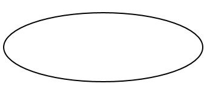
5.
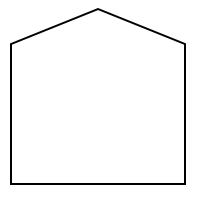
А. Исходное событие, обеспеченное достаточными данными
Б. Событие, недостаточно детально разработанное
В. Событие, вводимое логическим элементом
Г. Условное событие
Д. Событие, которое может случиться или не случиться
Е. Символ переноса
[?]~Соответствие между видами совместимостей характеристик человека и параметров окружающей среды:
1. Информационная
2. Энергетическая
3. Антропометрическая
4. Технико-эстетическая
5. Биофизическая
А. Соответствие информационной модели психофизиологическим возможностям человека
Б. Согласование органов управления с силовыми возможностями человека
В. Учет размеров тела человека, возможностей обзора, положения, позы в процессе работы
Г. Обеспечение удовлетворенности человека от общения с машиной
Д. Создание на рабочем месте такой окружающей среды, которая обеспечивала бы сохранение здоровья и высокую работоспособность человека
Е. Пространственное разделение гомосферы и ноксосферы
Ж. Информирование человека об опасных и вредных факторах производственной среды
[?]~Соответствие между психологическими причинами травматизма и способами их устранения:
1. Нарушение мотивационной части действий человека
2. Нарушение ориентировочной части действий человека
3. Нарушение исполнительской части действий человека
А. Обучение, выработка навыков и приемов безопасных действий
Б. Формирование культуры безопасности
В. Профессиональный отбор
[?]~Соответствие между психологическими причинами травматизма и их проявлениями:
1. Недооценка опасности, склонность к риску
2. Незнание норм и способов обеспечения безопасности
3. Несоответствие психофизических возможностей человека требованиям данной работы
А. Нарушение исполнительской части дей-ствий человека
Б. Нарушение ориентировочной части действий человека
В. Нарушение мотивационной части действий человека
[?]~Соответствие между санитарно-гигиеническими показателями и их содержанием:
1. Характеризует приоритетность требований к качеству воды
2. Является стандартом качества атмосферного воздуха
3. Регламентирует требования к составу воздуха рабочей зоны
А. ЛПВ
Б. ПДК{мр}
В. ПДК{рз}
Г. ПДВ
Д. ВСВ
[?]~Соответствие между санитарно-гигиеническими показателями и их содержанием:
1. Временно допустимая концентрация
2. Характеризует допустимый уровень воздействия на атмосферный воздух
3. Характеризует допустимый уровень воздействия на водные источники
А. ОБУВ
Б. ПДВ
В. ПДС
Г. ПДК{рз}
Д. ВСВ
[?]~Соответствие между санитарно-гигиеническими показателями и их содержанием:
1. Характеризует приоритетность требований к качеству воды
2. Регламентирует требования к составу воздуха рабочей зоны
3. Характеризует допустимый уровень воздействия на атмосферный воздух
А. ЛПВ
Б. ПДК{рз}
В. ПДВ
Г. ВСВ
Д. ОБУВ
[?]~Соответствие между санитарно-гигиеническими показателями и их содержанием:
1. Характеризует приоритетность требований к качеству воды
2. Является стандартом качества атмосферного воздуха
3. Регламентирует требования к составу воздуха рабочей зоны
4. Временный норматив выбросов предприятия
5. Временно допустимая концентрация
6. Предельно допустимый уровень воздействия на атмосферный воздух
7. Предельно допустимый уровень воздействия на водные источники
А. ЛПВ
Б. ПДК{сс}
В. ПДК{рз}
Г. ВСВ
Д. ОБУВ
Е. ПДВ
Ж. ПДС
[?]~Соответствие между санитарно-гигиеническими показателями и их содержанием:
1. Является стандартом качества атмосферного воздуха
2. Временный норматив выбросов предприятия
3. Предельно допустимый уровень воздействия на водные источники
А. ПДК{мр}
Б. ВСВ
В. ПДС
Г. ПДВ
Д. ПДК{рз}
[?]~Возможные эффекты комбинированного воздействия токсических веществ на организм человека:
1. суммирование эффектов, индуцированных комбинированным действием
2. усиление эффекта воздействия
3. ослабление эффекта воздействия
А. суммация (аддитивность)
Б. потенцирование (синергизм)
В. антагонизм
Г. флегматизация
Д. комбинация
[?]~Гигиенической оценке воздуха рабочей зоны при различных видах действия токсикантов соответствуют условия:
1. раздельное действие
2. потенцирование (синергизм)
3. антагонизм
4. суммация (аддитивное действие)
А.
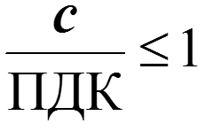
Б.
В.
Г.
Д.
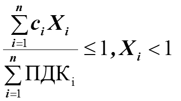
[?]~Соответствие между классами опасности вредных веществ и их характеристиками:
1. 1 класс
2. 2 класс
3. 3 класс
4. 4 класс
А. чрезвычайно опасные
Б. высокоопасные
В. умеренно опасные
Г. малоопасные
Д. практически неопасные
Е. радиационно опасные
Ж. биологически опасные
З. взрывоопасные
[?]~Соответствие между лимитирующим показателем вредности (ЛПВ) и его характеристикой:
1. Изменяет такие свойства воды как цвет, запах, вкус
2. Влияет на скорость протекания процессов самоочищения в водоеме
3. Влияет на организм человека и гидробионтов
А. Органолептический
Б. Общесанитарный
В. Общетоксический
Г. Токсикологический
Д. Физико-химический
[?]~Соответствие между характером действия факторов среды на организм и названием вида действия:
1. Влияние на организм какого-либо одного фактора
2. Действие нескольких, например химических веществ, одновременно поступающих в организм из какого-либо одного объекта окружающей среды
3. Когда какое-то химическое вещество одновременно поступает в организм из различных объектов окружающей среды
4. Действие, которое наблюдается при одновременном влиянии на организм человека физических, химических и других факторов окружающей среды
А. Раздельное
Б. Комбинированное
В. Комплексное
Г. Сочетанное
Д. Совместное
Е. Объединенное
[?]~Соответствие между классами опасности отходов и их характеристиками:
1. I класс опасности
2. II класс опасности
3. III класс опасности
4. IV класс опасности
5. V класс опасности
А. Чрезвычайно опасные
Б. Высокоопасные
В. Умеренно опасные
Г. Малоопасные
Д. Практически неопасные
Е. Радиационно опасные
Ж. Химически опасные
З. Биологически опасные
[?]~Соответствие между видами мониторинга и их масштабом:
1. Слежение за общебиосферными, в основном природными, явлениями
2. Слежение за общемировыми процессами и явлениями в биосфере Земли
3. Слежение за процессами и явлениями в пределах какого-то региона
4. Мониторинг региональных и локальных антропогенных воздействий в особо опасных зонах и местах
А. Базовый
Б. Глобальный
В. Региональный
Г. Импактный
[?]~Соответствие между видами эрозии почвы и вызвавшими их причинами:
1. Смыв почвы талыми, дождевыми и ливневыми водами.
2. Вынос ветром наиболее мелких частей почвы
3. Разрушение почвы под воздействием транспорта, землеройных машин и т.п.
4. Засоление почв вследствие нарушения правил полива при орошаемом земледелии
А. Водная
Б. Ветровая
В. Техническая
Г. Ирригационная
Д. Химическая
Е. Физическая
[?]~Соответствие между классом предприятия и размером санитарно-защитной зоны, м:
1. I
2. II
3. III
4. IV
5. V
1. 1000
2. 500
3. 300
4. 100
5. 53
[?]~Указать соответствие между индексом подсистемы ССБТ и входящими в нее стандартами:
1. Организационно-методические стандарты
2. Стандарты требований и норм по видам опасных и вредных производственных факторов
3. Стандарты требований безопасности к производственному оборудованию
4. Стандарты требований безопасности к производственным процессам
5. Стандарты требований безопасности к средствам защиты работающих
А. 0
Б. 1
В. 2
Г. 3
Д. 4
[?]~Соответствие между видами инструктажей и условиями, при которых они производятся (по ГОСТ 12.0.004-90):
1. При поступлении на работу
2. Впервые на рабочем месте
3. На рабочем месте с установленной нормативными документами периодичностью
4. При внесении изменений в инструкции, нарушении правил охраны труда, длительных перерывах в работе
5. При выполнении работ по наряду - допуску
А. вводный
Б. первичный
В. повторный
Г. внеплановый
Д. целевой
Е. оперативный
Ж. периодический
[?]~Соответствие между органами, осуществляющими государственный надзор и контроль и их функциями:
1. Надзор за соблюдением трудового законодательства и иных нормативных правовых актов, содержащих нормы трудового права
2. Контроль и надзор в сфере промышленной безопасности
3. Контроль и надзор в области производственной санитарии
А. Государственная инспекция труда
Б. Ростехнадзор
В. Роспотребнадзор
Г. Рострудинспекция
Д. Госгортехнадзор
Е. Госсанэпиднадзор
[?]~Соответствие между видами и формами ответственности за нарушения в области ОТ:
1. дисциплинарная
2. административная
3. материальная
4. уголовная
А. выговор
Б. штраф лишение премии
В. возмещение ущерба, причиненного предприятию
Г. ограничение или лишение свободы
Д. возмещение вреда, причиненного работнику
[?]~Соответствие между классами опасных и вредных производственных факторов и их примерами:
1. Физические
2. Химические
3. Биологические
4. Психофизиологические
А. Аэрозоли преимущественно фиброгенного действия (АПФД)
Б. Вредные вещества
В. Патогенные микроорганизмы
Г. Тяжесть и напряженность труда
[?]~Соответствие между степенями вредности условий труда и возможными последствиями:
1. I
2. II
3. III
4. IV
А. обратимые функциональные изменения и риск развития заболевания
Б. стойкие функциональные нарушения, рост заболеваемости с временной потерей трудоспособности, появление начальных признаков профессиональных заболеваний
В. профессиональные заболевания в легких формах в период трудовой деятельности
Г. выраженные формы профессиональных заболеваний, высокие уровни заболеваемости с временной утратой трудоспособности
[?]~Соответствие между классами ЧС и числом пострадавших:
1. Локальная
2. Местная
3. Территориальная
4. Федеральная
А. ≤ 10 человек
Б. от 10 до 50 человек
В. от 50 до 500 человек
Г. > 500 человек
[?]~Соответствие между величиной избыточного давления во фронте ударной волны и степенью поражения человека:
1. Менее 10 кПа
2. 20 - 40 кПа
3. 60...100 кПа
4. 40...60 кПа
А. Безопасное
Б. Легкие поражения
В. Поражения средней тяжести
Г. Тяжелые контузии и травмы
[?]~Степени разрушения зданий и сооружений в зависимости от величины избыточного давления:
1. Менее 10 кПА
2. 10 - 20 кПА
3. 20 - 30 кПА
4. 30 - 50 кПА
А. нет
Б. Слабые
В. Средние
Г. Сильные
[?]~Соответствие между классами пожара и характером горючей среды:
1. А
2. В
3. С
4. D
5. Е
А. Горение газообразных веществ
Б. Горение металлов и металлсодержащих веществ
В. Горение твердых веществ
Г. Электроустановки, находящиеся под напряжением
Д. Горение жидких веществ
[?]~Соответствие между классами пожара и рекомендуемыми средствами пожаротушения:
1. А
2. В
3. С
4. D
5. Е
А. Флегматизация газовыми составами, порошки
Б. Углекислота, хладоны
В. Специальные порошки
Г. Пена, мелко-распыленная вода
Д. Все виды огнетушащих средств
[?]~Рекомендуемые средства пожаротушения в зависимости от характера горючей среды:
1. Горючие газы
2. Щелочные металлы
3. Твердые вещества
4. Электроустановки, находящиеся под напряжением
5. Нефтепродукты
А. порошки
Б. углекислота
В. вода
Г. пена
Д. инертные газы
[?]~Соответствие между категориями взрывопожарной и пожарной опасности по СП 12.13130-09 и их признаками:
1. А
2. Б
3. В1-В4
4. Г
5. Д
А. Горючие газы, легковоспламеняющиеся жидкости с температурой вспышки до 280С
Б. Горючие пыли и волокна, легковоспламеняющиеся жидкости с температурой вспышки более 280 С
В. Горючие и трудногорючие жидкости, твердые горючие и трудногорючие вещества и материалы
Г. Горючие газы, жидкости и твердые вещества, которые сжигаются в качестве топлива
Д. Негорючие вещества и материалы в холодном состоянии
[?]~Соответствие между классами взрывоопасных зон и их признаками:
1. 0
2. 1
3. 2
4. 21
5. 22
А. Пространство, в котором газопаровоздушная взрывоопасная среда присутствует постоянно или в течение хотя бы одного часа
Б. Горючие газы или пары ЛВЖ, способные образовать с воздухом взрывоопасные смеси при нормальных режимах работы
В. Горючие газы или пары ЛВЖ, способные образовать с воздухом взрывоопасные смеси только в результате аварий
Г. Горючие пыли, способные образовать с воздухом взрывоопасные смеси при нормальных режимах работы
Д. Горючие пыли, способные образовать с воздухом взрывоопасные смеси только в результате аварий
[?]~Соответствие между классами пожароопасных зон и их признаками:
1. П-I
2. П-II
3. П-IIа
4. П-III
А. Зоны, расположенные в помещениях, в которых обращаются горючие жидкости с температурой вспышки выше 61 0С)
Б. Зоны, расположенные в помещениях, а которых выделяются горючие пыли или волокна с нижним концентрационным пределом воспламенения более 65 г/м3 к объему воздуха)
В. Зоны, расположенные в помещениях, в которых обращаются твердые горючие вещества
Г. Расположенные вне помещения зоны, в которых обращаются горючие жидкости с температурой вспышки выше 610С или твердые горючие вещества.
~Определить коэффициент частоты производственного травматизма для подразделения, в котором:
Р = 10000 - среднесписочное число работающих за отчетный период
N = 50 - количество несчастных случаев
Ответ: 5
~Определить коэффициент тяжести производственного травматизма для подразделения, в котором:
N = 50 - количество несчастных случаев за отчетный период
Д = 750 - общее число дней нетрудоспособности
Ответ: 15
~Определить коэффициент частоты производственного травматизма для подразделения, в котором:
Р = 10000 - среднесписочное число работающих за отчетный период
N = 40 - количество несчастных случаев
Ответ: 4
~Определить коэффициент тяжести производственного травматизма для подразделения, в котором:
N = 45 - количество несчастных случаев за отчетный период
Д = 900 - общее число дней нетрудоспособности
Ответ: 20
~Риск травмирования работников некоторого подразделения за отчетный период составил 5*10:(-3). Чему равен коэффициент частоты производственного травматизма для данного подразделения за указанный период?
Ответ: 5
~Вероятность события В равна:
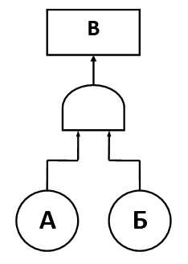
Ответ: Р(В) = Р(А) \* Р(Б)
~Вероятность события В равна:
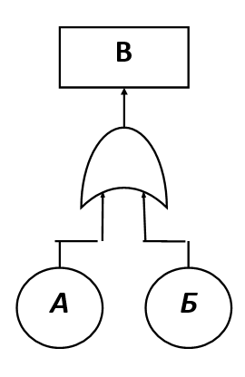
Ответ: Р(В) = Р(А) + Р(Б) + Р(А) \* Р(В)
~Вероятность события В равна:
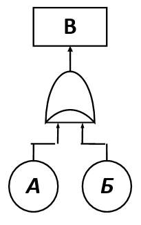
Ответ: Р(В) = Р(А) + Р(Б)
~Вероятность события В равна, если Р(А) = Р(Б) = 0,1:
Ответ: 0.01
~Вероятность события В равна, если Р(А) = 0,1; Р(Б) = 0,05:
Ответ: 0.15
~Вероятность события В равна, если Р(А) = 0,05; Р(Б) = 0,2:
Ответ: 0.01
~Из приведенных ниже схем эквивалентной схеме на [рис] является схема:
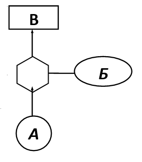
<~>